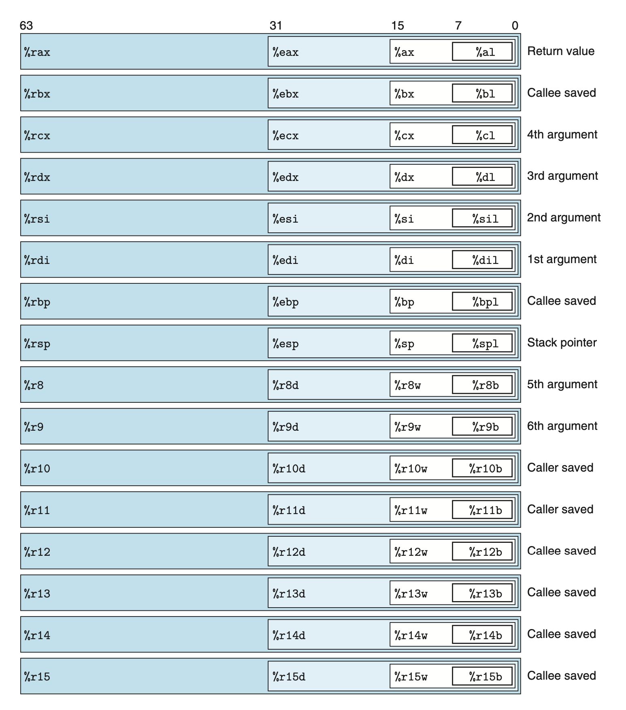

mechain level representation
可以说 计算机底层只认识 机器码，机器码可以管理数据、管理内存，读写磁盘、相互交流（通过网络唠嗑）。编译器基于语言规则 机器指令集和操作系统协议，经过几个步骤生成 机器码。拿GCC来说，回想第一篇文章的几个编译步骤。
用C，JavaScript等这些高级语言编程呢，就可以避免掉机器级的操作，js 甚至不需要操心GC！而且高级语言还有其他诸多好处。
那为啥要 花费时间学习 机器码呢？读这些代码，可以更好的理解编译器做的优化，有助之后分析低效率代码。额外的可以了解到代码中的脆弱点（可以被提权的那种）以及如何防范。
这次呢，通过观察C代码的编译过程，了解到优化编译会重排代码执行顺序，去掉不用计算，高效操作取代低效操作，甚至递归转迭代。理解C语言转成汇编语言很有挑战，就像找你妹游戏里的微妙差别组成的谜团
回看历史
intel 处理器系列（通常被称为 x86）有着一段很长的发展历史，用一个简单的晶体管数量/年份 图表来看一下
值得一提的是 每一个处理器都是向下兼容的，可以运行旧版本代码。所以你会在指令集中看到一些奇怪的东西（史前怪兽）。
多年来，几家公司生产着兼容intel的处理器，机器级程序几乎都是一样的。其中就包括 AMD。多年来，AMD 紧随其后一直第二，强制执行营销策略，表现不是最好的 但是便宜。到 2020 年时，AMD第一个突破了 1千兆赫子时钟周期限制的商用微处理器，也就是x86-64，转而变得特别有竞争力。
程序编码
计算机系统使用几种不同形式的抽象，通过一种简单的抽象模型把很多复杂的细节隐藏掉。其中两个对于机器级编程最为重要。一个是叫 instruction set architecture （ISA）定义了机器级编程的行为规范，定义处理器状态值，指令形式，每个指令对状态的影响。包含 x86-64 在内的多数ISA，描述了程序中每个指令在等待执行队列中的行为，一个执行结束再开始执行后一个。
机器码与初始的C代码有跟多不同的地方，C代码中不可见的一些状态在处理器状态中是可见的：
- 程序计数器，通常被称作PC，调用 %rip 寄存器指向下一条将要执行指令的内存地址
- 整型寄存器文件，包含16个有名字的地址存储着64-bit 的值。这些寄存器可以存放地址（C指针）或整数。一些寄存器用来追踪程序中的错误状态，另外一些呢会存放临时数据，比如说参数、本地变量，或是一个函数的返回值
- 条件代码寄存器会存储最近的算术或逻辑指令，用来执行数据流中的条件变化，比如 if 条件或while 条件
- 一组矢量寄存器会存放一个或多个整数或浮点数
上图 表示 x86-64 系统中 c 语言类型的大小
GCC 编译出来的汇编代码呢 大多数都有一个单子节的后缀，表示操作数的大小。比如 数据移动指令有四种变形：movb(move byte),movw(move word), movl(move double word),和 movq(move quad word)。后缀“l” 标示这个数是一个双字节。
x86-64 CPU 包含一组16个通用寄存器，用于存储 64比特的数据
操作数 说明符
操作数有三个来源：立即数，类似于一个常量形式的数字，一些汇编代码中是以$ 符号开头的整数，比如$-577 或 $0x1F。不同指令集立即数的合法范围也是不同的，编译器会自动选择最贴近的方法编译数值。第二种操作数在寄存器中读取，可能是 64，32，16，8 比特中的一种。最后一种操作数的来源是内存，把内存视为一个大数组的话，操作数可以通过数组下标来取值。
操作数的计算方法很简单 Imm(rb,ri,s) => Imm + R[b] + R[i] * s
下图是x86-64 中 16个寄存器，存储不同大小数据的名字，用途。
你会发现 寄存器的名字有些奇怪，一会r开头，一会儿数字命名，为什么呢，在很久很久前，大概IA32 的时代，那个时候只有8个寄存器，每个寄存器都有很明确要做的事，比如 %rcx 用来存储 couter，%rdx 用来存储data，后来随着计算机行业的发展，寄存器数量不断增多，寄存器们就不再各司其责只干之前指定的那些事了，所以现在的我们看这些寄存器的命名很奇怪，历史问题
%rax 寄存器，用于存储返回值，%rbp 寄存器用来存储函数间相互调用时，执行子函数前 暂存父函数的变量，在阅读汇编代码的时候 明确了解寄存器的作用，很重要 余不一一

出栈入栈
数据copy来copy去最终是干啥了呢？ 最终是把数据 push 和 pop 到程序栈里面。栈 在 处理程序调用中起到了非常重要的作用。可以用一个数组来形象化表示栈，会遵守后进先出的规则。
如上图，内存地址是由下到上递增，栈顶在地址最小，存在 %rsp 的寄存器里面，有出栈入栈的操作都会修改 %rsp 寄存器中村的地址，比如 popq 一个8字节的栈顶数据，%rsp 就会减少8，之前的栈顶元素在下次覆盖数据前还会存在那里。
栈 和 程序代码 和 程序其他数据都存在一样的内存里面，所以 程序可以用普通读取内存的方式 随机读取栈中的数据（有点奇幻
算数计算 和 逻辑计算
load effective address means leaq.
大多数计算都会有数据大小的变化，比如 add：addb, addw, addl, addq,用来处理 1字节 2字节 4字节 8字节的相加计算，只有leaq 就没有大小的变化。有四种不同的计算方法：加载有效地址(leaq) 一元计算(unary)，二元计算(binary)和 移动(shift)
leaq 基础计算，如下图：
用>>A >>L 来区分算数 和 逻辑运算。
leaq 只是用来做一些简单算术计算。但不是简单的把数字从内存读到寄存器中，而是将内存地址拷贝到寄存器中，相当于做了一个指针，但操作的目的地必须是一个寄存器。
一元计算和二元计算看起来简单的多了，有几点要注意。
- 一元计算 只有一个计算对象，可以在寄存器中也可以在内存中
- subq %rax, %rdx 表示 寄存器 %rdx 的值 减去 %rax 中的值，第一个操作数是来源 第二个操作数是目的地
- 第一个操作数可以是 立即数，寄存器或内存中的值。但第二个必须是寄存器或内存地址
- mov 指令 两个操作数一定不能都是 内存地址
- 第二个操作数是内存地址时，处理器一定是从内存中读取 计算然后再写入内存
- 为什么做减法的时候，要将参数从%rdi 移到 %rax？ ？
- 寄存器 %rax 是存函数的返回值的，先把第一个参数放到 %rax 中，然后做减法，减法会将结果存入第一个操作数的值中，也就是%rax，然后ret ，就会将减法计算结果作为函数的return值
加法也是这样的
::怎么查到的呢，思路：如果是一个通用操作，那么查基本定义，就会有相关说明::
期间讲了一些循环语句 的编译器实现，比如 for do-while while,switch，其他的还好，其中最有意思的是编译器处理 switch 语句的方式，编译器跟人 思考和处理问题的方式 真的差别巨大，但是编译器很聪明，用最少的资源解决问题。
说说 编译器怎么处理switch-case 情况的吧。。。首先 他不会老老实实的 将switch 变成很多个 if else，虽然说 某些情况下 （如简单计算）编译器会都去计算，得到所有的结果 最后一步呢 拿想要的那个计算结果就好了 简单粗暴且效率高。 编译器做的事情呢 是自己个儿 生成一个 case table 罗列所有的可能情况，就可以做到像 已知数组下标然后根据下标取值那样轻而易举。
对于一些特殊情况 比如case是个负数，编译器会增加偏移量让他变成0，还有一个就是有个学生提出一种很特殊的case：这个switch 语句 只会包含两个case： 0 和一百万，那么 编译器会不会老老实实的生成一个一百万行的table呢？？？
答案是 是的 他会（刚不是说它贼聪明的吗。。）
的确会这样，为什么呢。那个老头子讲到 虽然生成了一张 一百万行的大表，那么 就会预先知道所有的值，然后呢 他实际上会建立一个 if-else 的树，用了二分法查找，这样速度就很快 时间复杂度也就是 log2(n) 而不是 O(n)。
程序
程序是 软件界中非常重要的一个抽象。程序做的事情呢 是把按照特定流程表示的一些函数类方法打包起来。有着优秀设计的软件使用程序的抽象思想，将内部复杂的处理逻辑隐藏在函数内部，对外报漏一些清晰简单的接口定义。
程序中三个很重要的机制：（demo：函数P内部会调用函数Q）
移交控制权：设置程序计数器指到Q开始的地方，Q函数return 后再继续执行P余下的部分；
移交数据：P会传递给Q一个或多个参数，Q也会返回一些数据给P
分配回收内存：Q函数会被动态分配些内存 存放本地数据，Q函数返回后再释放掉那些占用的内存
这里我们来详细看一个程序运行时栈。FILO 或者说是 last in first out。
可以看到 正在执行的程序永远占据着栈顶，当P调用Q时，会将返回地址推入栈，也就是说 这一行为会明确指明Q函数执行结束后，PC应该指哪儿。
多维数组（nested array）
记不记得 之前分享过的一个二维数组拷贝计算：
1 | let srcBigArr = [] |
copyij 与copyji 速度相差之大 令人咋舌！！！当时只是一个引子，这里我们来揭开这个copy函数神秘的头盖骨。
首先我们需要了解两件事儿
- 多维数组元素 是以行优先的顺序存储在内存中的， 比如一个2x2数组，存储顺序是a00，a01, a10, a11。
- 编译器生成的代码怎么拿到 某个具体的值呢。用mov 指令，根据数据开头的地址计算出来的偏移地址读取到想找到那个值。
emmm 好吧 到这里 依然没能掀起这块骨头 我们接着往下看